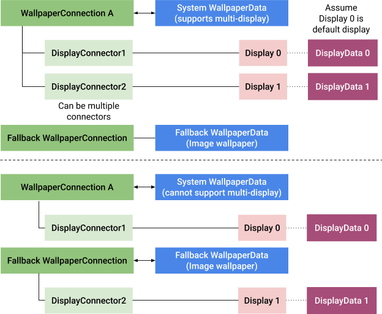

Updates made to these display-specific areas are provided below:
System decorations
Android 10 adds support for configuring secondary displays to show certain system decorations, such as wallpaper, navigation bar, and launcher. By default, the primary display shows all system decorations, and secondary displays show those optionally enabled. Support for an Input Method Editor (IME) can be set separately from other system decorations.
Use DisplayWindowSettings#setShouldShowSystemDecorsLocked()
to add support for system decorations on a specific display or provide
a default value in /data/system/display_settings.xml. For examples,
see Display window settings.
Implementation
DisplayWindowSettings#setShouldShowSystemDecorsLocked() is also exposed in
WindowManager#setShouldShowSystemDecors() for testing. Triggering of this method
with intent to enable system decors doesn't add decor windows that were
previously missing, or remove them if they were previously present. In most
cases, the change of system decorations support takes full effect only after a
device reboot.
Checks for support of system decorations in the WindowManager code base
usually go through DisplayContent#supportsSystemDecorations() while
checks for external services (such as System UI to check if the navigation bar
should be shown) use WindowManager#shouldShowSystemDecors().
To understand what is controlled by this setting, explore the call points of
these methods.
System UI decor windows
Android 10 adds system decor window support
for the navigation bar only, because the navigation bar is essential
for navigating between activities and apps. By default, the navigation bar shows
Back and Home affordances. This is included only if the target display supports
system decorations (see DisplayWindowSettings).
The status bar is a more complicated system window, because it also contains Notification Shade, Quick Settings, and Lock Screen. In Android 10, the status bar is not supported on secondary displays. Therefore, notifications, settings, and a full keyguard are available only on the primary display.
The Overview/Recents system window isn't supported on secondary screens. In Android 10, AOSP only display Recents on the default display and contains activities from all displays. When launched from Recents, an activity that was on a secondary display is brought to the front on that display, by default. This approach has some known issues, such as not updating immediately when apps appear on other screens.
Implementation
To implement additional System UI features, device manufacturers should use a single System UI component that listens for the addition/removal of displays and presents appropriate content.
A System UI component that supports Multi-Display (MD) should handle the following cases:
- Multiple display initialization at startup
- Display added at runtime
- Display removed at runtime
When System UI detects the addition of a display before WindowManager, it creates
a race condition. This can be avoided by implementing a custom callback from
WindowManager to System UI when a display is added instead of subscribing to
DisplayManager.DisplayListener events. For a reference implementation,
see CommandQueue.Callbacks#onDisplayReady for navigation bar support
and WallpaperManagerInternal#onDisplayReady for wallpapers.
In addition, Android 10 provides these updates:
- The
NavigationBarControllerclass controls all functionality specific to navigation bars. - To view a customized navigation bar, see
CarStatusBar. TYPE_NAVIGATION_BARis no longer restricted to a single instance and can be used per display.IWindowManager#hasNavigationBar()is updated to include thedisplayIdparameter for System UI only.
Launcher
In Android 10, each display configured to support
system decorations has a dedicated home stack for launcher activities with type
WindowConfiguration#ACTIVITY_TYPE_HOME, by default. Each display
uses a separate instance of launcher activity.
Figure 1. Multi-display launcher example for
platform/development/samples/MultiDisplay
Most existing launchers don't support multiple instances and aren't optimized
for large screen sizes. Also, a different kind of experience is often expected
on secondary/external displays. To provide a dedicated activity for secondary
screens, Android 10 introduces the SECONDARY_HOME category in intent
filters. Instances of this activity are used on all displays that support system
decorations, one per display.
<activity>
...
<intent-filter>
<category android:name="android.intent.category.SECONDARY_HOME" />
...
</intent-filter>
</activity>
The activity must have a launch mode that doesn't prevent multiple
instances and is expected to adapt to different screen sizes. The launch mode
can't be singleInstance or singleTask.
Implementation
In Android 10, RootActivityContainer#startHomeOnDisplay()
automatically selects the desired component and intent depending on the display
where the home screen is launched. RootActivityContainer#resolveSecondaryHomeActivity()
contains the logic to look up the launcher activity component depending on the currently
selected launcher and can use the system default, if needed (see
ActivityTaskManagerService#getSecondaryHomeIntent()).
Security restrictions
In addition to restrictions that apply to activities on secondary displays, to avoid the possibility of a malicious app creating a virtual display with enabled System decorations and reading user-sensitive information from the surface, the launcher appears only on virtual displays owned by the system. The launcher doesn't display content on non-system virtual displays.
Wallpapers
In Android 10 (and higher), wallpapers are supported on secondary displays:
Figure 2. Live wallpaper on internal (above) and external displays (below)
Developers can declare support for the wallpaper feature by providing
android:supportsMultipleDisplays="true" in the
WallpaperInfo XML definition. Wallpaper developers are also
expected to load assets using the display context in
WallpaperService.Engine#getDisplayContext().
The framework creates one WallpaperService.Engine instance
per display, so each engine has its own surface and display context. The
developer needs to make sure that each engine can draw independently, at
different frame rates, respecting VSYNC.
Selecting wallpapers for individual screens
Android 10 doesn't provide direct platform support for selecting wallpapers
for individual screens. To accomplish this, a stable display identifier is
needed to persist wallpaper settings per display.
Display#getDisplayId() is dynamic, so there's no guarantee that a
physical display will have the same ID after reboot.
However, Android 10 added DisplayInfo.mAddress,
which contains stable identifiers for physical displays and can be used for a full
implementation in future. Unfortunately, it is too late to implement the logic
for Android 10. The suggested solution:
- Use the
WallpaperManagerAPI to set the wallpapers. WallpaperManageris obtained from aContextobject, and eachContextobject has information about corresponding display (Context#getDisplay()/getDisplayId()). Therefore, you can obtaindisplayIdfrom aWallpaperManagerinstance without adding new methods.- On the framework side, use
displayIdobtained from aContextobject and map it to a static identifier (such as a port of a physical display). Use the static identifier to persist the chosen wallpaper.
This workaround uses existing implementations for wallpaper pickers. If it was opened on a specific display and uses the right context, then when it calls to set a wallpaper, the system can automatically identify the display.
If there's a need to set wallpaper for a display other than the current
display, then create a new Context object for the target display
(Context#createDisplayContext) and obtain the
WallpaperManager instance from that display.
Security restrictions
The system won't show wallpapers on virtual displays that it doesn't own. This is due to a security concern that a malicious app could create a virtual display with enabled system decorations support and read a user-sensitive information from the surface (such as a personal photo).
Implementation
In Android 10, the IWallpaperConnection#attachEngine()
and IWallpaperService#attach() interfaces accept the
displayId parameter to create per-display connections.
WallpaperManagerService.DisplayConnector encapsulates a per-display
wallpaper engine and connection. In WindowManager, wallpaper controllers are
created for each DisplayContent object at construction instead of a
single WallpaperController for all displays.
Some of the public WallpaperManager method implementations (such as
WallpaperManager#getDesiredMinimumWidth()) were updated to compute
and provide information for corresponding displays.
WallpaperInfo#supportsMultipleDisplays() and a corresponding
resource attribute were added, so that app developers can report which
wallpapers are ready for multiple screens.
If the wallpaper service shown on the default display doesn't support multiple displays, then the system shows the default wallpaper on the secondary displays.

Figure 3. Wallpaper fallback logic for secondary displays